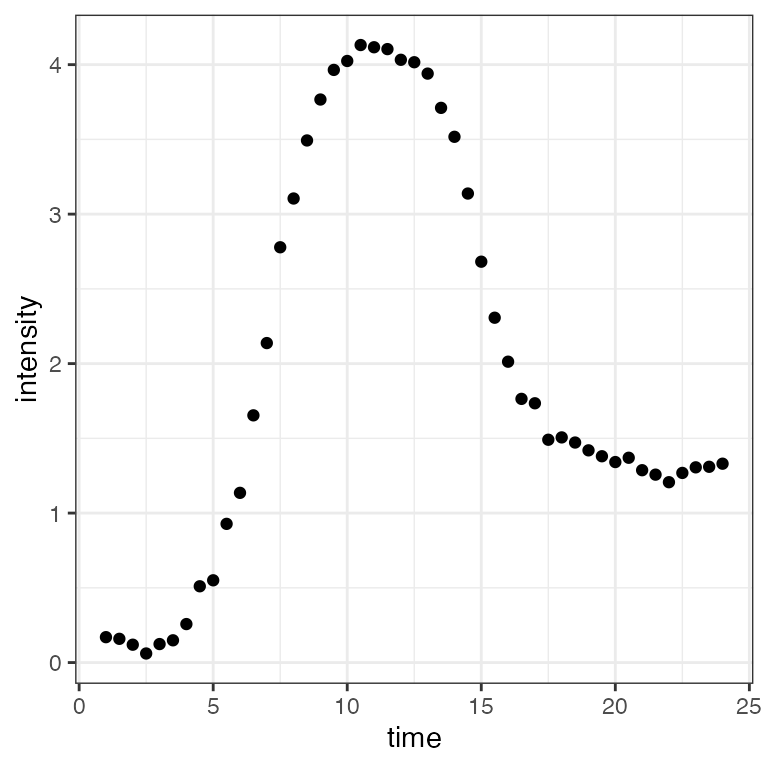
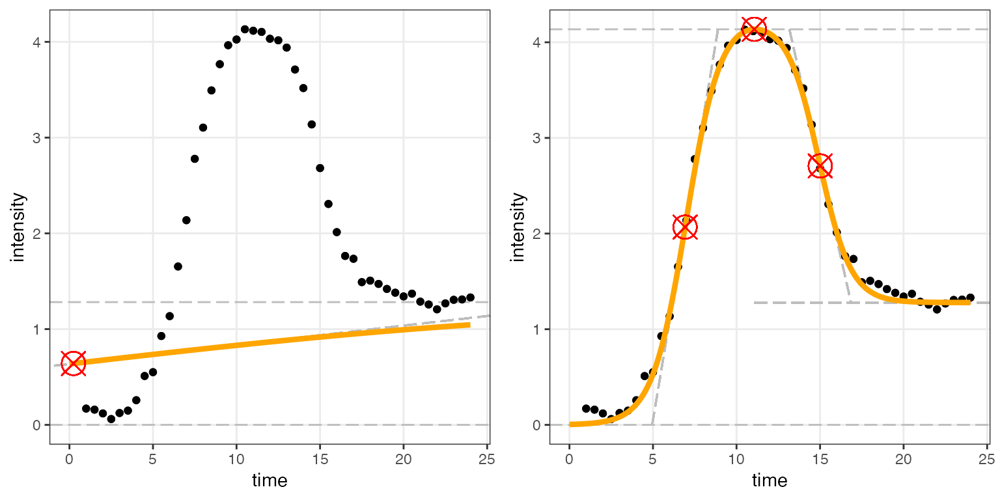

Introduction
Umut Caglar, Claus O. Wilke
2025-08-01
Source:vignettes/introduction.Rmd
introduction.RmdThe overarching aim of this package is to fit both a sigmoidal and a double-sigmoidal curve to time–intensity data and then to determine which of the two models fit the data best. The sigmoidal model default is assumed to start at zero and rise to an asymptotic value. The double-sigmoidal model first increases from 0 (default) to a maximum intensity and the decreases to a final asymptotic intensity. For both the sigmoid and double-sigmoid models, we provide an option to let the lower asymptote () freely vary. After calculating the best candidate curves for both of models a decision algorithm determines which of the two candidate models (if either) fits the data best. Finally, the package estimates key parameters that quantify the time–intensity data with respect to the best-fitting model.
For the sigmoidal model, key parameters describing the curve are:
- maximum: The maximum asymptotic intensity.
- midpoint: The time point at which the sigmoidal curve reaches half of its maximum intensity.
- slope: The slope of the curve at the midpoint.
- (optional, not default) lower asymptote: The lower asymptote for the intensity when time is at negative infinity
For the double-sigmoidal model, key parameters describing the curve are:
- maximum: The maximum intensity the double-sigmoidal curve reaches.
- final asymptotic intensity: The intensity the curve decreases to after having reached its maximum.
- midpoint 1: The time point at which the double-sigmoidal curve reaches half of its maximum intensity during the initial rise.
- slope 1: The slope at midpoint 1.
- midpoint 2: The time point at which the double-sigmoidal curve reaches the intensity corresponding to the mean of the maximum intensity and the final asymptotic intensity.
- slope 2: The slope at midpoint 2.
- (optional, not default) lower asymptote: The lower asymptote for the intensity when time is at negative infinity.
Importantly, the parameters used to mathematically describe the fitted curves do not necessarily directly correspond to these intuitively meaningful parameters. Therefore, the sicegar package calculates the intuitively meaningful parameters from the estimated parameters. See the vignette on additional parameters for details.
Example fit on simulated input data
The input to the fitting function must be in the form of a data frame
with two columns called time and intensity.
Here we use double-sigmoidal data generated with arbitrarily chosen
parameters. We can use the function
doublesigmoidalFitFormula() to generate a double-sigmoidal
curve, to which we add random noise.
time <- seq(1, 24, 0.5)
noise_parameter <- 0.2
intensity_noise <- runif(n = length(time), min = 0, max = 1) * noise_parameter
intensity <- doublesigmoidalFitFormula(time,
finalAsymptoteIntensityRatio = .3,
maximum = 4,
slope1Param = 1,
midPoint1Param = 7,
slope2Param = 1,
midPointDistanceParam = 8)
intensity <- intensity+intensity_noise
dataInput <- data.frame(time, intensity)
ggplot(dataInput, aes(time, intensity)) + geom_point() + theme_bw()
We can now fit the two models to the data and determine which is the
better fit. This is done with the function
fitAndCategorize(). The three provided threshold parameters
are used in the categorization process and depend on the units in which
the data are measured. See the vignette on categorizing fits for
details.
fitObj <- fitAndCategorize(dataInput,
threshold_minimum_for_intensity_maximum = 0.3,
threshold_intensity_range = 0.1,
threshold_t0_max_int = 0.05)The two fitted curves can be visualized with the function
figureModelCurves(), which returns a
ggplot2 plot.
# Double-sigmoidal fit with parameter related lines
fig_a <- figureModelCurves(dataInput = fitObj$normalizedInput,
sigmoidalFitVector = fitObj$sigmoidalModel,
showParameterRelatedLines = TRUE)
fig_b <- figureModelCurves(dataInput = fitObj$normalizedInput,
doubleSigmoidalFitVector = fitObj$doubleSigmoidalModel,
showParameterRelatedLines = TRUE)
plot_grid(fig_a, fig_b, ncol = 2) # function from the cowplot package
Clearly the regular sigmoidal curve does not provide a good fit but the double-sigmoidal curve does. This information is available from the returned fit object:
fitObj$decisionProcess$decision # final decision## [1] "double_sigmoidal"The fit object
The fit object returned by fitAndCategorize() contains
all the information potentially of interest in the course of this type
of an analysis. It consists of five distinct components:
names(fitObj)## [1] "normalizedInput" "sigmoidalModel" "doubleSigmoidalModel"
## [4] "decisionProcess" "summaryVector"Each component holds numerous parameters of interest:
-
.$normalizedInput: The normalized dataset with normalization parameters, so that the raw dataset can be recovered from the normalized one. For more information, see the vignette on fitting individual models. -
.$sigmoidalModel: The parameters for the sigmoidal fit. For more information, see the vignettes on fitting individual models and on additional parameters. -
.$doubleSigmoidalModel: The parameters for the double-sigmoidal fit. For more information, see the vignettes on fitting individual models and on additional parameters. -
.$decisionProcess: The results from the decision process of which of the two models fit the data better. For more information, see the vignette on categorizing fits. -
.$summaryVector: Key parameters of the winning model. These are the most important parameters extracted from either.$sigmoidalModelor.$doubleSigmoidalModel.
The contents of the summary vector are as follows:
str(fitObj$summaryVector)## List of 21
## $ dataInputName : logi NA
## $ decision : chr "double_sigmoidal"
## $ maximum_x : num 11.1
## $ maximum_y : num 4.14
## $ midPoint1_x : num 6.92
## $ midPoint1_y : num 2.07
## $ midPoint2_x : num 15
## $ midPoint2_y : num 2.71
## $ slope1 : num 1.05
## $ slope2 : num -0.775
## $ finalAsymptoteIntensity: num 1.28
## $ incrementTime : num 3.94
## $ startPoint_x : num 4.95
## $ startPoint_y : num 0
## $ reachMaximum_x : num 8.89
## $ reachMaximum_y : num 4.14
## $ decrementTime : num 3.69
## $ startDeclinePoint_x : num 13.2
## $ startDeclinePoint_y : num 4.14
## $ endDeclinePoint_x : num 16.9
## $ endDeclinePoint_y : num 1.28All the parameters are defined in the vignette on additional parameters.